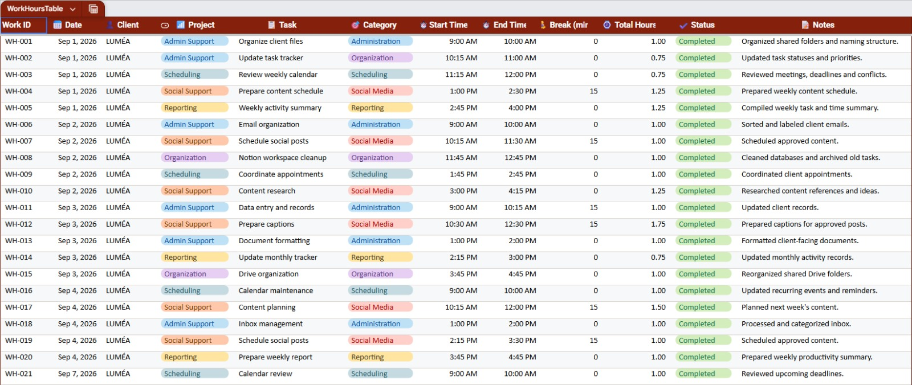
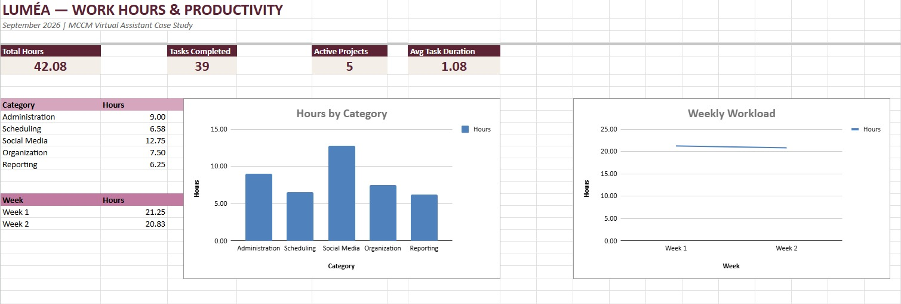
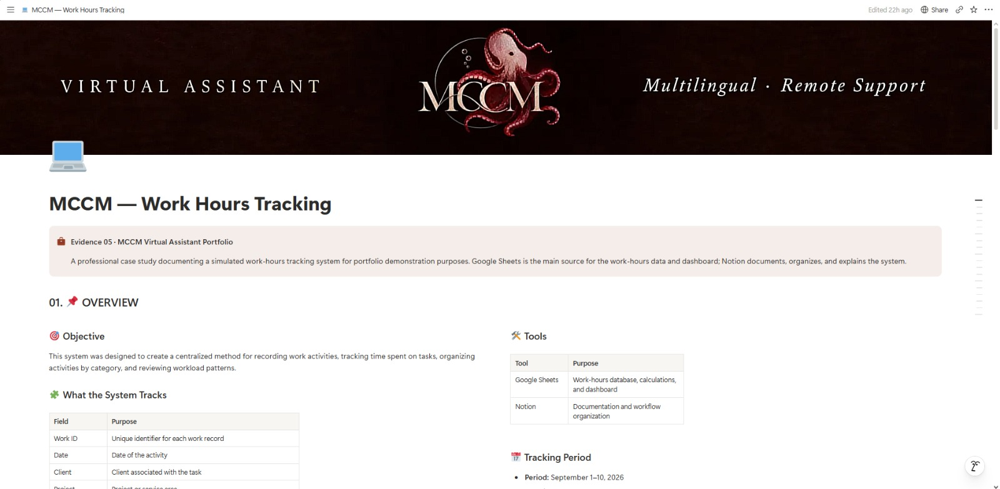
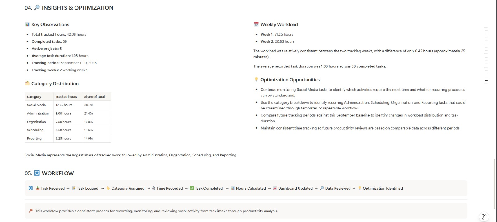

Overview
Central overview of the productivity tracking system.
CASE STUDY 05
This case study demonstrates my approach to tracking work hours, organizing productivity data and transforming daily records into clear operational insights using structured spreadsheets, dashboards and digital workflows.
THE PROJECT
Tracking working hours manually can make it difficult to understand where time is being spent, how workload changes throughout the week and which activities require the most attention.
For this portfolio case study, I created a conceptual work-hours tracking system for LUMÉA — Handmade Home & Lifestyle. The system combines structured Google Sheets records, automated calculations, dashboard visualizations and productivity insights.
Virtual Assistant — Productivity Support
LUMÉA — Handmade Home & Lifestyle
Google Sheets
Notion
Zapier
Work Hours Tracking & Productivity System
01 / TRACKING FOUNDATION
A structured work-hours tracker used to record dates, clients, projects, tasks, categories, start and end times, breaks, total hours, status, and notes.

The tracker provides the structured data used by the productivity dashboard and later analysis.
02 / PRODUCTIVITY OVERVIEW
The dashboard transforms the tracked work-hour data into a concise productivity overview, making it easier to review workload, task volume, category distribution, and weekly activity.

WORKLOAD ANALYSIS
TIME DISTRIBUTION
The workload remained relatively balanced across the two tracked weeks.
03 / DOCUMENTATION LAYER
Notion is used as the documentation layer of the system, organizing the tracker structure, dashboard information, insights, and workflow documentation in one workspace.

WORKSPACE STRUCTURE
05 AREAS / 01 SYSTEMA structured Notion workspace connecting documentation, tracking, monitoring, review, and workflow management.
Central overview of the productivity tracking system.
Structured workspace for recording and organizing work-hour data.
Productivity information consolidated for quick review.
Documentation of observations and opportunities for improvement.
Documented sequence for maintaining the tracking system.
The tracking system turns recorded work-hour data into structured insights that support workload visibility, review, and workflow improvement.

INSIGHTS FROM THE DATA
Reviewing the collected information makes recurring workload patterns easier to identify and evaluate.
Work-hour records provide a consolidated view of time spent across clients, projects, and activities.
Categorized activities help identify where administrative, scheduling, social media, organization, and reporting work is concentrated.
Once workload patterns are documented, repetitive processes can be reviewed and workflows adjusted.
WORKFLOW CYCLE
Documentation creates visibility. Visibility supports better workflow decisions.
PROJECT PROCESS
The system was designed to transform daily work-hour records into an organized productivity overview, making it easier to identify workload patterns and support better planning.
Recording work sessions, dates, categories and hours in a structured tracker.
Standardizing records, categories and formulas for consistent data management.
Transforming tracked hours into KPIs, charts and workload summaries.
Using productivity insights to support planning and future workflow improvements.
PROJECT OUTCOME
This project demonstrates my ability to organize work-hour data and transform routine administrative records into useful productivity information. The system connects detailed tracking with dashboard reporting, productivity insights and a structured digital workflow.
30 simulated work-hour records
Structured Google Sheets tracker
Automated calculations and productivity KPIs
Dashboard with workload visualizations
Productivity insights and optimization actions
Notion workflow and automation concept
CASE STUDY
Productivity & Administrative Support
LUMÉA — Handmade Home & Lifestyle
Work Hours Tracking & Productivity
Google Sheets
Conceptual Portfolio Project
"Turning structured time records into clearer productivity insights and better workflow decisions."